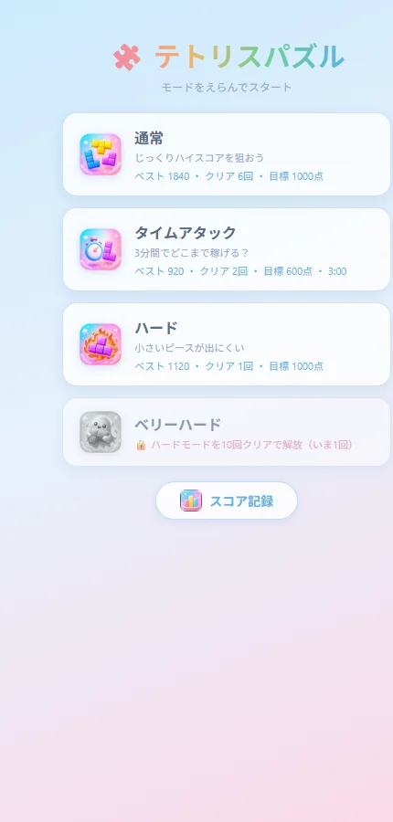
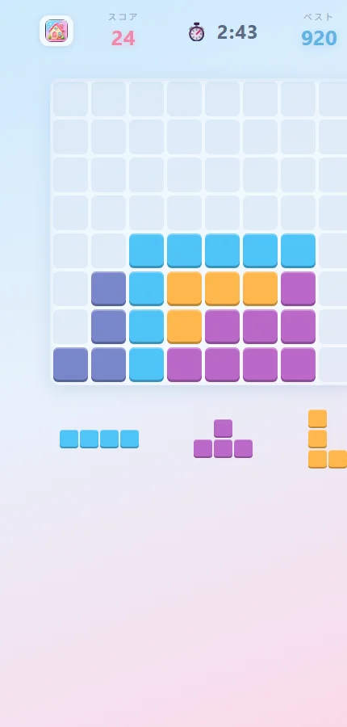
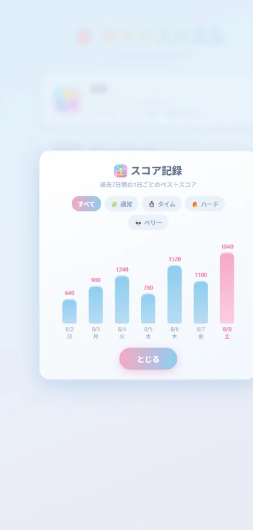

「ピンクにして」「3分モード作って」——AIとアプリを"育てる"という新しい開発
前回の記事では、AIに日本語でお願いしただけでテトリスパズルのゲームが完成し、その日のうちに公開されるまでをお見せしました。
今回はその続き。公開したゲームを、会話だけでどんどん進化させていった記録です。ポイントは、アプリは一度作って終わりではなく、AIと一緒に「育てる」ものになったということです。
要望はぜんぶ「話し言葉」
進化の履歴を、実際にAIへ伝えた言葉と一緒に並べてみます。
| 私が言ったこと | 実現したこと |
|---|---|
| 「背景の色味をパステルカラーで水色とかピンクにしたい」 | 全画面がパステル調のデザインに |
| 「PWAにして」 | ホーム画面に追加すると本物のアプリのように起動・オフラインでも遊べる |
| 「アイコン画像はGPTブラウザを操作して作成して」 | AIがChatGPTを操作してアイコンを生成 |
| 「タイムアタックモードを出して。3分以内の時間制限」 | ⏱️ 3分間のタイムアタックモード |
| 「ハードモード、ベリーハードとか」 | 🔥 ハード・💀 ベリーハード追加 |
| 「クリア回数を超えたらモード解放みたいな」 | クリア回数で新モードが解放される仕組み |
| 「1日ごとのベストスコアをグラフで出すのはどう？」 | 📊 過去7日間の成績グラフ |
どれも仕様書ではなく、思いつきレベルの話し言葉です。それでこれができました。

モードを選んで遊び、目標スコアを達成すると「クリア」。クリア回数がたまると次のモードが解放されます。ゲームとしての飽きさせない工夫も、会話の中から生まれました。

タイムアタックは3分間の勝負。残り時間が画面中央でカウントダウンされます。

毎日の上達が見える成績グラフ。「グラフで出すのはどう？」の一言が、この画面になりました。
面白かったこと①：AIがAIを使う
アプリのアイコンやモードのアイコンは、私のパソコンのブラウザをAI（Claude）が自分で操作して、ChatGPTに画像を作らせて取り込みました。「パステルカラーで、テトリス風ブロックの、かわいいアイコン」という注文をAIがAIに出し、できた画像をダウンロードして、サイズを整えて、アプリに組み込むところまで全自動です。
ちなみに、この記事に載っている図解イラストも、同じ方法でAIがChatGPTに作らせたものです。AIが手足のようにほかのAIツールを使う——ちょっと未来を感じた瞬間でした。
面白かったこと②：バグをAIが自分で見つけて直した
タイムアタックモードのテスト中、AIが自分でこんな報告をしてきました。
重要な問題を発見しました。スマホでアプリを裏に回すとタイマーが止まってしまいます。実時間ベースの方式に修正します。
言われるまで私は気づきもしなかった不具合です。AIは3分のタイマーを実際に測って検証し、問題を見つけ、直し方まで自分で決めて修正しました。テスターと修理係もAIなのです。
更新はユーザーに自動で届く
もうひとつ地味にすごいのが更新の仕組み。ゲームを進化させるたびに、すでに遊んでくれている人の画面には「新しいバージョンが利用可能です」というお知らせが出て、ワンタップで最新版になります。こうした「アプリ運営のプロがやるような仕組み」も、AIが当たり前のように組み込んでくれました。
「育てる」開発は、驚くほど楽しい
朝に思いついたことが、夕方にはゲームの新機能になっている。この速度感は、一度体験するとやみつきになります。
完璧な計画を立ててから作るのではなく、遊んでみて、感想を言って、また良くなる。アプリ開発が、盆栽や家庭菜園のような「育てる楽しみ」に変わりました。
次回は最終回。使った道具と費用、AIへの頼み方のコツなど、実践的なノウハウをまとめます。